Schritt 1. Öffne Thunderbird.
Schritt 2. Klicke auf
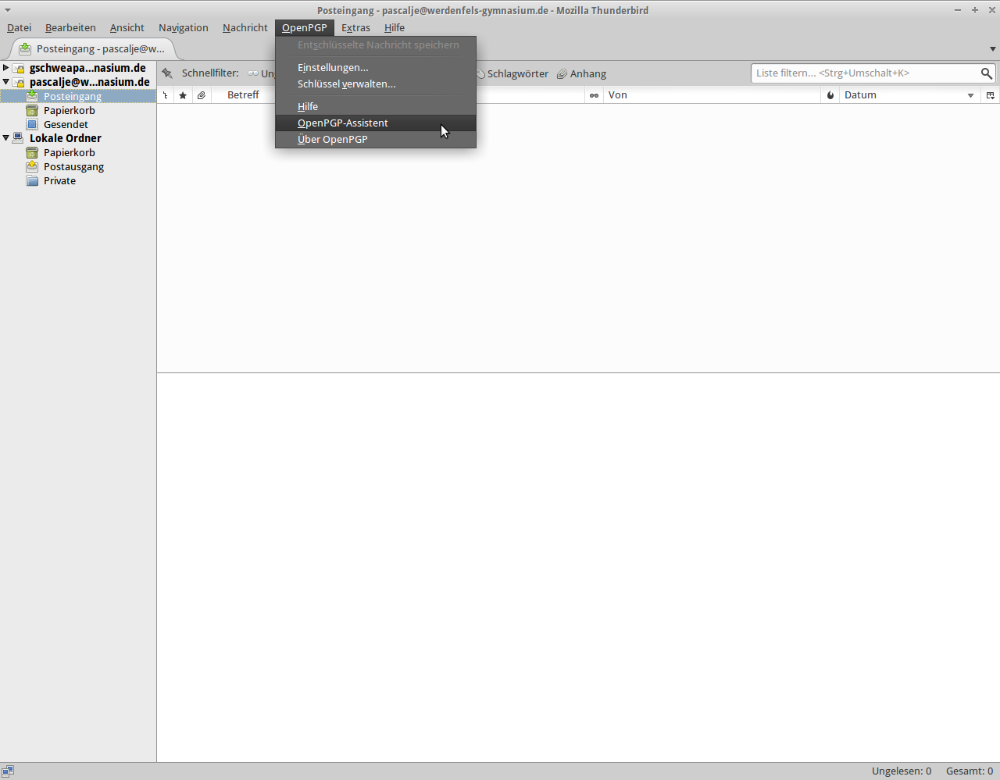
Schritt 3. Wähle
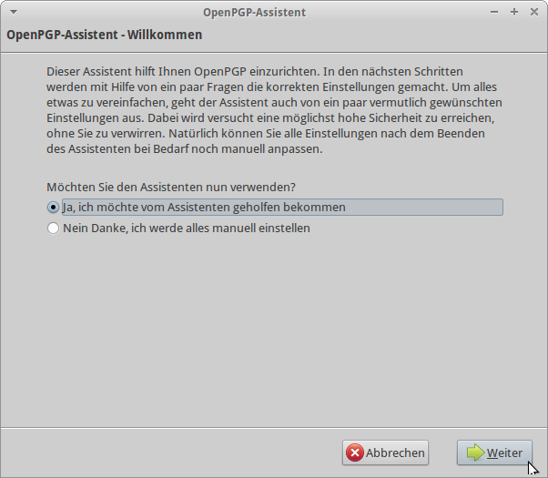
Schritt 4. Dann klicke wieder auf
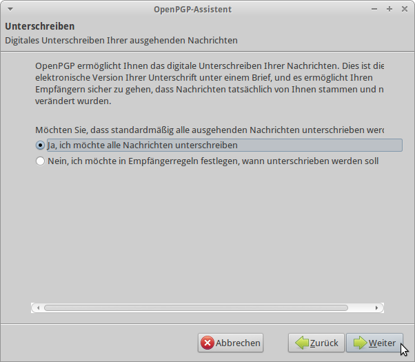
Schritt 5. Klicke nun auf
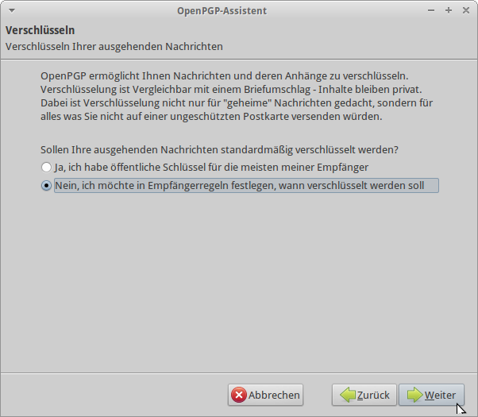
Schritt 6. Klicke nun auf
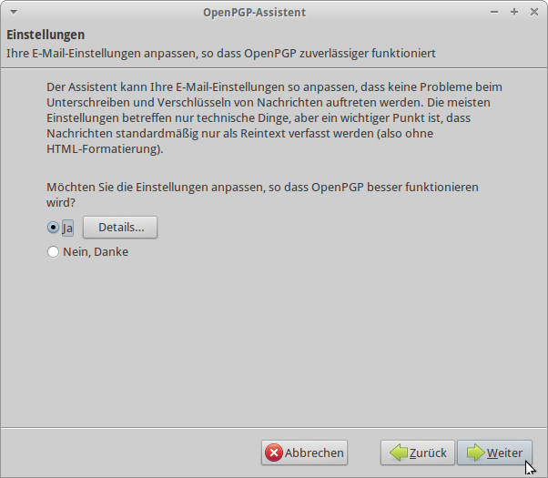
Schritt 7. Klicke auf
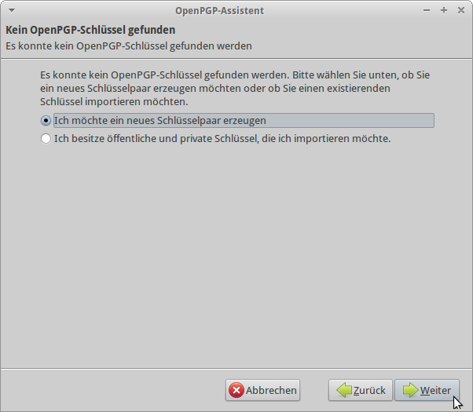
Schritt 8. Gib ein beliebiges Passwort ein und und klicke auf Weiter.
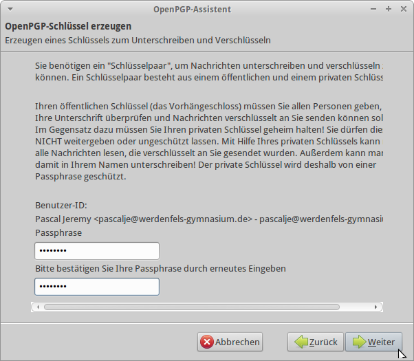
Schritt 9. Klicke wieder einmal auf Weiter.
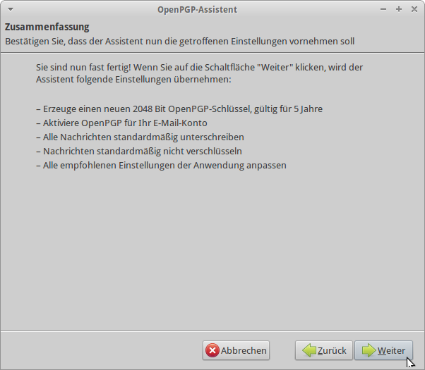
Schritt 10. Warte nun einen Moment und klicke ein wenig mit der Maus um dem Zufallsgenerator zu helfen

Schritt 11. Anschließend klicke auf
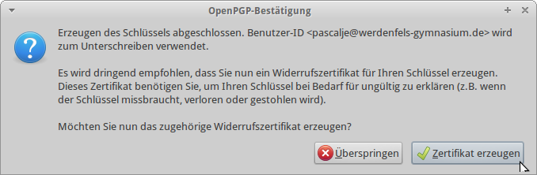
Schritt 12. Nun speicher dein Schlüsselpaar irgendwo!
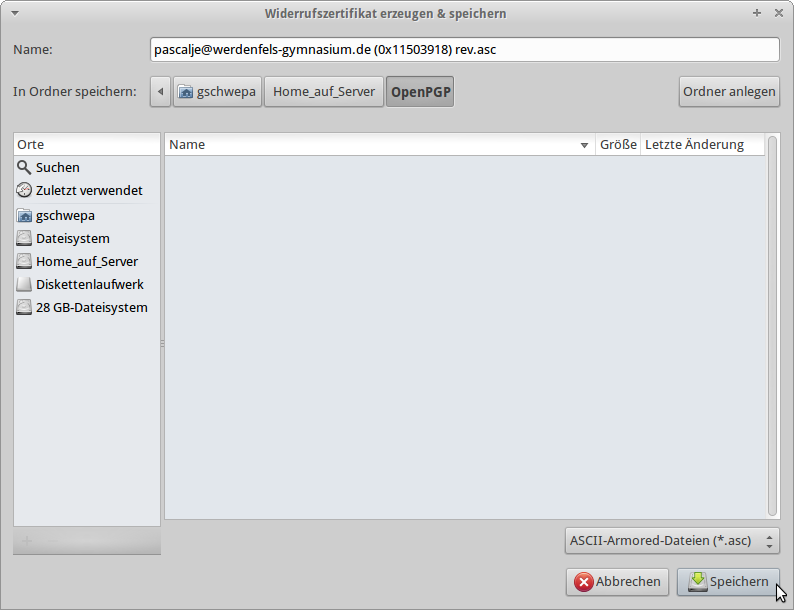
Schritt 13. Zuletzt gib dein vorher eingegebenes Passwort ein
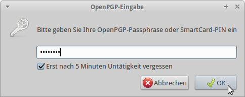
Schritt 14. Nun habt ihr